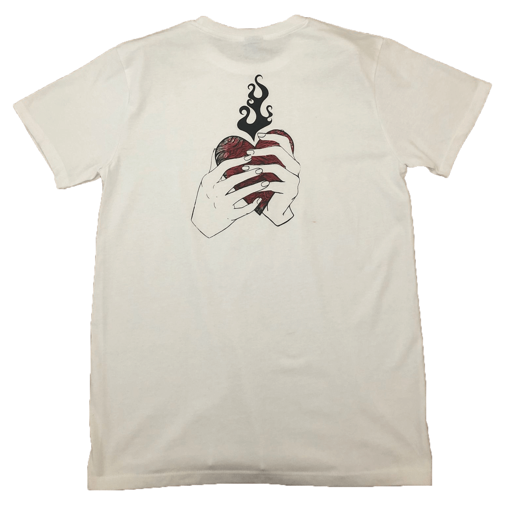
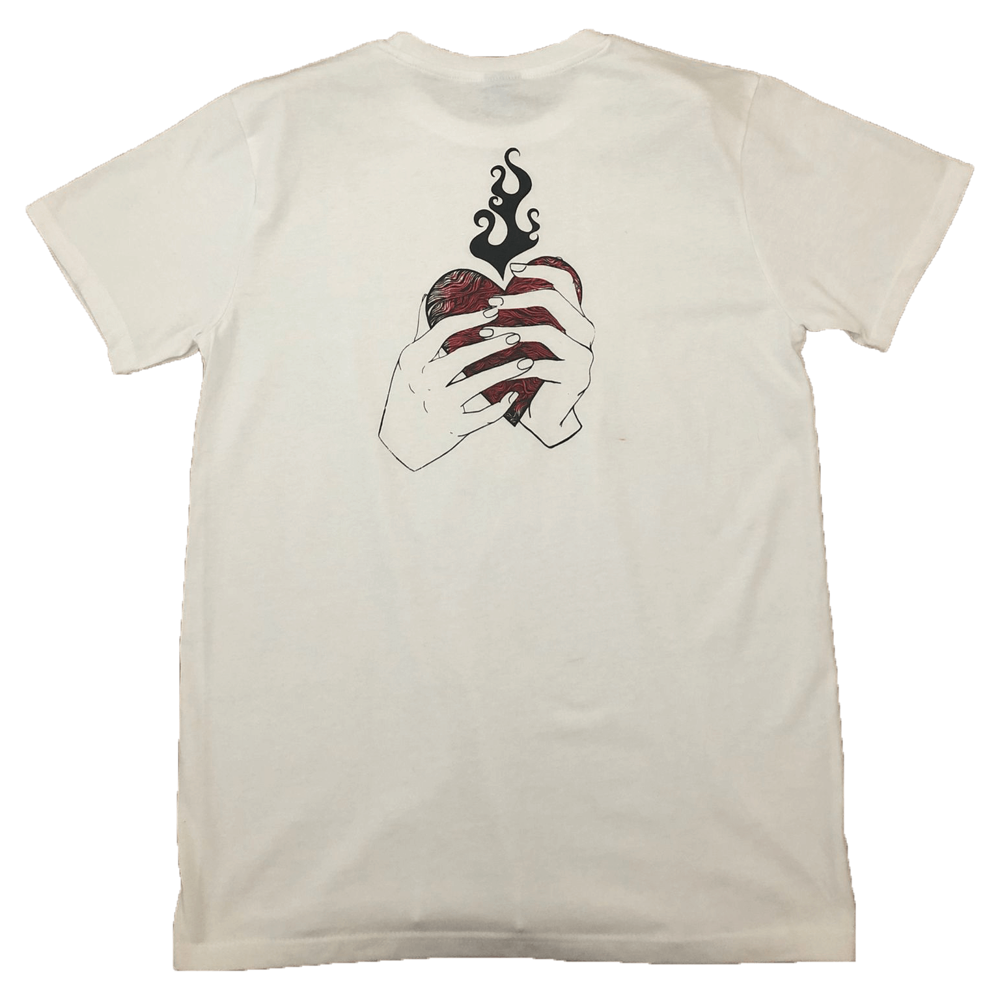

técnica
La serigrafía es una técnica de impresión que transfiere tinta o pintura a través de un marco de metal o madera con una malla tensada de nailon. Usando esta técnica, diseño una variedad de prendas de ropa como bolsas, remeras, entre otras.
un poco de historia
El nacimiento de la pantalla de serigrafía moderna tuvo lugar en Reino Unido hacia mediados del siglo XIX, la cual presentaba ya un marco de madera con una tela de seda tensada sobre él. En origen, estos avances se implantaron únicamente en el ámbito de la industria textil para la decoración de telas.


 
